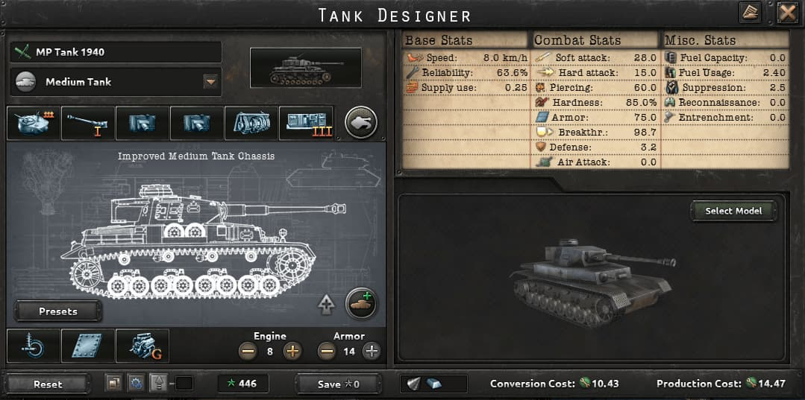
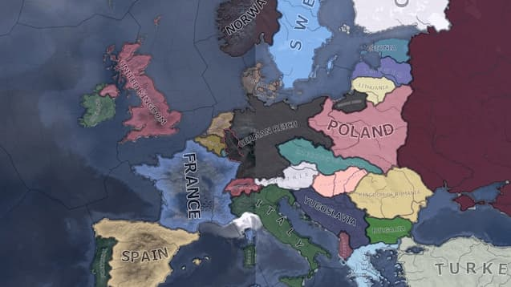
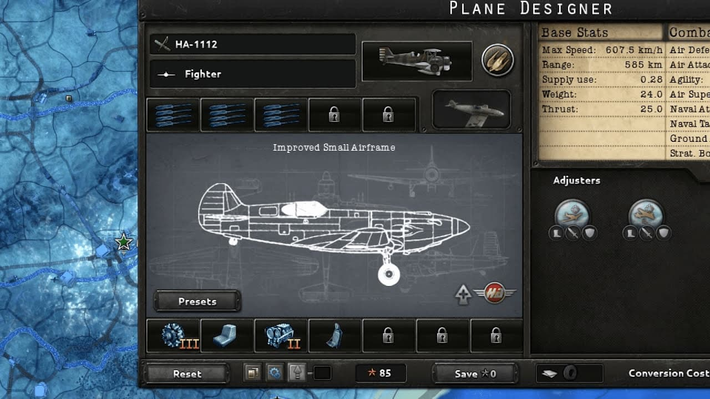
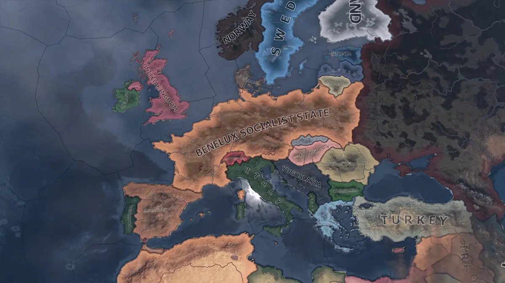
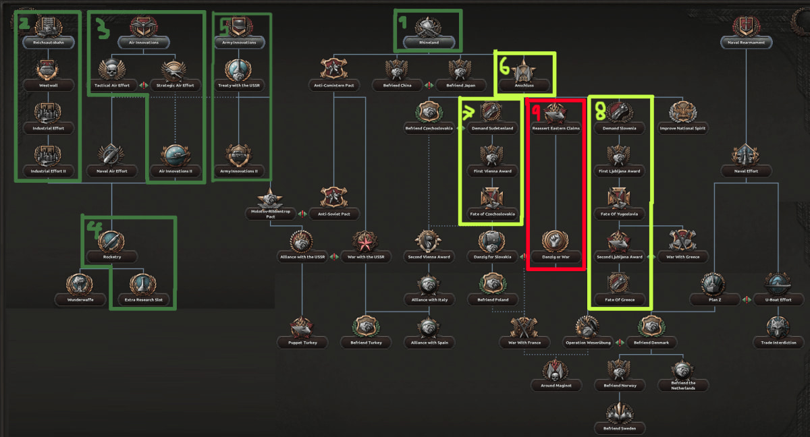

¡<!DOCTYPE html>
<html lang="es">
<head>
    <meta charset="UTF-8">
    <meta name="viewport" content="width=device-width, initial-scale=1.0">
    <title>El Rincón  HOI4</title>
    
    <link rel="stylesheet" href="../css/style.css">
    
    <link rel="preconnect" href="https://fonts.googleapis.com">
    <link rel="preconnect" href="https://fonts.gstatic.com" crossorigin>
    <link rel="icon" type="image/png" href="../img/favicon.ico">
    <link href="https://fonts.googleapis.com/css2?family=Roboto+Mono:wght@400;700&family=VT323&display=swap" rel="stylesheet">
</head>
<body>

    <header class="header-principal">
        <h1 class="logo-titulo">El Rincón  de HOI4</h1>
        
        <nav class="nav-principal">
            <ul>
                <li><a href="../index.html" class="activo">Inicio</a></li>
                <li><a href="articulos.html">Artículos</a></li>
                <li><a href="galeria.html">Galería</a></li>
                <li><a href="contacto.html">Contacto</a></li>
                <li><a href="login.html" class="btn-login-registro">Login/Registro</a></li>
            </ul>
        </nav>
    </header>

    <div class="container-principal">
        
        <main class="contenido-principal">
            <h2>> Archivos Gráficos_</h2>
            <p>Una colección de capturas de pantalla de momentos clave y mapas estratégicos.</p>

            <div class="galeria-grid">
                
                <figure class="galeria-item">
                    
                    <figcaption>> Plantilla de Tanque mediano de 1940 </figcaption>
                </figure>
                
                <figure class="galeria-item">
                    
                    <figcaption>> Mapa de Frentes (1939)</figcaption>
                </figure>
                
                <figure class="galeria-item">
                    
                    <figcaption>> Plantilla Aviones 1945</figcaption>
                </figure>

                <figure class="galeria-item">
                    
                    <figcaption>> Nacion Secreta de Benelux</figcaption>
                </figure>
                
                <figure class="galeria-item">
                    
                    <figcaption>> Árbol de Focos: Alemania</figcaption>
                </figure>

            </div>

        </main>
        <aside class="sidebar">
            
            <div class="anuncio">
                <h3>> Enlaces de Interés_</h3>
                <p>Recursos de la comunidad para todo estratega:</p>
                <ul>
                    <li><a href="https://hoi4.paradoxwikis.com/Hearts_of_Iron_4_Wiki">HOI4 Wiki Oficial</a></li>
                    <li><a href="https://discord.com/invite/hoi4">Discord de la Comunidad</a></li>
                    <li><a href="https://steamcommunity.com/workshop/about/?l=latam&appid=394360">Steam Workshop</a></li>
                </ul>
            </div>
            
            <div class="anuncio ad-banner">
                <h3>> Patrocinador </h3>
                <a href="https://www.youtube.com/watch?v=vfpjRVIo9X8" target="_blank">
                    
                </a>
                <p class="ad-disclaimer">Pulsa en el anuncio para más información</p>
            </div>

            <div class="anuncio sobre-autor">
                <h3>> El Estratega_</h3>
                
                <p>Soy <strong>Herson</strong>, un veterano con +1000 horas de juego. En este terminal comparto mis estrategias.</p>
                
                <a href="contacto.html" class="btn-retro">Contacta ></a> 
            </div>
        </aside>

    </div>

     <footer class="footer-principal">
        <p>© 2025 El Rincón de Hearts of Iron IV. Proyecto de clase -- Tirso Tormo.</p>
        <p>Inspirado en la estética de terminal retro.</p>
    </footer>
</body>
</html>